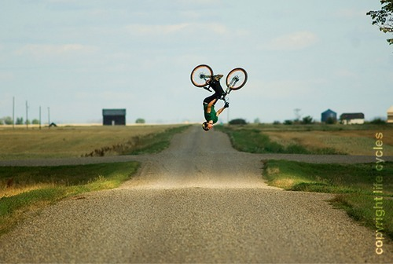

Thu, 16 Sep 2010 18:36:00 · France · ExtremeSports · Biking · Shimano · RED · Photography · Film
Life Cycles Film
A découvrir, le premier teaser officiel du film « Life Cycles » Shooté par Derek Frankowski et Ryan Gibb à l’aide d’une caméra RED pour un rendu des plus exceptionnel, le film est disponible en pré-commande sur PinkBike et le teaser est visible en HD dans la suite !

Basically, Life Cycles, is a mountain biking flick with a twist; shot with a RED Camera by Derek Frankowski and Ryan Gibb. Think Planet Earth mixed with an extreme sport video. Check out the complete series of the snapshotshere.